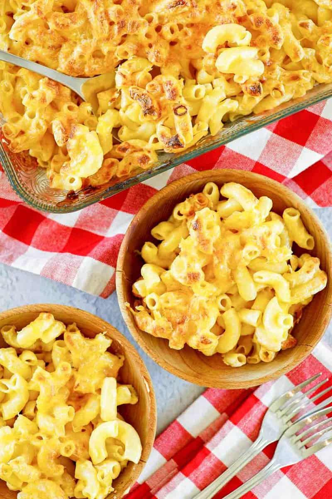

Chic-Fil-A Mac n Cheese

Description
Meal Description
Meal Description
1 tablespoon salt
16 ounces elbow macaroni pasta
2 cups heavy cream
1 1/4 pounds of American chesse
2 tablespoons Parmesan cheese
1 tablespoon Romano cheese
4 ounces Colby Jack cheese shredded
Instructions
Fill a large pot 2/3 full of water. Add 1 tablespoon of salt. When the water comes to a boil add the pasta. Cook to al dente. Drain the macaroni noodles
In a medium-sized pot add heavy cream, American cheese, Parmesan cheese, and Romano cheese. Melt cheeses with heavy cream over medium heat. Stir/Whisk frequently. Do not allow the cheese to scorch.
Turn the oven on to broil, on high.
Place cooked pasta into a 9 x 13-inch casserole dish. Pour melted cheeses over the pasta.
Add shredded Colby Jack cheese to the top of the pasta. Place under broiler.
Broil just until the cheese begins to brown.